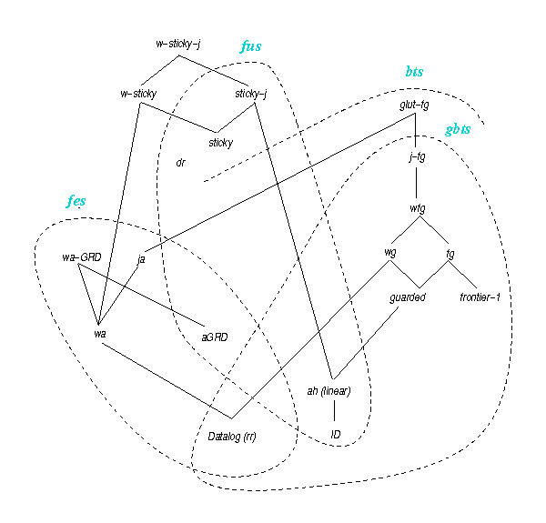

Structures
The following structures are used by the analyzer for checking some rule classes. Furthermore the graph of rule dependencies is also used in the combination step to compute rule base subsets (corresponding to its strongly connected components).
Graph of rule dependencies
The graph of rule dependencies (GRD) is a directed graph built from a rule set as follows: there is a vertex for each rule in the set and there is an edge from a rule R1 to a rule R2 if R1 may lead to trigger R2, i.e., R2 depends on R1. R2 depends on R1 if and only if there is piece-unifier (for this notion, see f.i. this paper) between the body of R2 and the head of R1.
Graph of Position Dependencies
The graph of position dependencies noted Gpos is a directed graph built from a rule set as follows: first, for each predicate p and for each of its positions p[i] a vertex is added. Then, for each rule and for each variable x that occurs at some position p[i] in the rule body: (1) for each position r[j] where x also occurs in the rule head, a normal edge is added from p[i] to r[j], and (2) for each position q[k] in the rule head where some existentially quantified variable appears, a special edge is added from p[i] to q[k].In this graph, a vertex (hence a predicate position) is of finite rank if there is no circuit containing a special edge and passing through this vertex.
Marked Variable Set
The marked variable set is built from a rule set by the
following marking procedure:
(i) for each rule Ri and for each variable v occuring in
its body, if v does not occur in all atoms of its head, mark (each occurrence of) v in its body;
(ii) apply until a fixpoint is reached: for each rule Ri, if a marked variable v appears at position p[k] in its body,
then for each rule Rj (including
i = j) and for each variable x appearing at position p[k] in the head of Rj,
mark each occurence of x in the body of Rj.
Affected Position Set
The affected position set is built from a rule set
by the following procedure:
(i) for each rule and for each existentially quantified variable occuring
at position p[i] in its head, p[i] is affected;
(ii) for each rule and for each variable x that occurs only
at affected positions in its body, all positions q[j] in its head where occurs x are
affected.
A variable is said to be affected if it occurs only at affected positions.
Rule Classes
 The rule classes are divided into two types: abstract classes, which ensure decidability but are not recognizable, i.e., one cannot always determine if a set for rules belongs to such a class, and concrete classes, which may specialize one or several abstract classes and are recognizable by syntactic properties.
In the figure on the right side, rule classes are ordered by inclusion: an edge between two classes means that the above one includes the one below. If there is no edge between two classes, it means there are incomparable. Note that a class was omitted in this picture for the sake of readability: disconnected rules, which are fes, fus and gbts, and are a specialization of domain-restricted, weakly-acyclic and frontier-guarded rules.
Finally, some classes present in this figure are not implemented for now in the analyzer, hence they are not described below. These classes are the following:
- weakly-sticky-join (w-sticky-j)
- sticky-join (sticky-j)
- glut-frontier-guarded (glut-fg)
- jointly-frontier-guarded (j-fg)
- jointly-acyclic (ja).
Abstract Rule Classes
These rule classes are said abstract because they have no syntactic property and are used to classify concrete classes. Each of these classes ensures the existence of query mechanisms that halt in finite time for any query. Determining if a rule (or a set of rules) belongs to one of these abstract classes is an undecidable problem.
Finite expansion set (fes)
This abstract class ensures the finiteness of forward chaining algorithms that saturate facts until the halting condition is satisfied and check if the query maps to the obtained facts.
Finite unification set (fus)
This abstract class ensures the finiteness of any backward chaining algorithm thath rewrites the query in a breadth-first manner while maintaining a set of the most general rewritings and answers 'yes' if an element of this set maps to the facts.
(Greedy) Bounded treewidth set (bts)
The BTS class, which strictly includes FES, ensures decidability, although there is currently no algorithm available for this class. However, Greedy Bounded Treewidth Set (GBTS) is an expressive subclass of BTS that is provided with a forward chaining like halting algorithm. Note that, except for glut-fg (cf. Figure), all currently known BTS but not FES classes are GBTS.
Concrete Rule Classes
These classes are presented with their syntactic property and the abstract classes they belong to.
There are two kinds of syntactic properties:
- local properties which are checked on each rule independently from the others (hence a set fulfils a local property if all of its rules fullfil it);
- global properties which are checked on the set of rules (note that the analyser may cut the set into subsets of rules thanks to the graph of rule dependencies strongly connected components).
Reminder: the frontier of a rule is the set of variables shared by its body and its head.
Acyclic graph of rule dependencies (agrd)
This rule class property is a global property.
Ensures:
- fes
- fus
The associated graph of rule dependencies does not contain any circuit.
Datalog (dlg)
See Range-restricted.Disconnected (disc)
This rule class property is a local property.
Ensures:
- fes
- fus
- gbts
The frontier is empty. Note that any disconnected rule needs to be applied only once.
Domain-restricted (dr)
This rule class property is a local property.
Ensures:
- fus
All atoms in the head contain either all or none variables from the body.
Frontier-guarded (fg)
This rule class property is a local property.
Ensures:
- gbts
At least one atom in the body contains all the variables from the frontier.
Frontier-one (fr1)
This rule class property is a local property.
Ensures:
- gbts
The frontier contains only one variable.
Guarded (g)
This rule class property is a local property.
Ensures:
- gbts
At least one atom in the body (called a guard) contains all the variable from the body.
Linear (lin)
This rule class property is a local property.
Ensures:
- fus
- gbts
The body contains only a single atom.
Range-restricted (rr)
This rule class property is a local property.
Ensures:
- fes
- gbts
All variables that appear in the in the head also occur in the body.
Sticky (s)
This rule class property is a global property.
Ensures:
- fus
Each marked variable occurs at most once in a rule body (cf. marked variable set).
Weakly-acyclic (wa)
This rule class property is a global property.
Ensures:
- fes
All predicate positions in the graph of position dependencies have finite rank (i.e., there is no circuit with special edge).
Weakly-frontier-guarded (wfg)
This rule class property is a global property.
Ensures:
- gbts
At least one atom in the body of each rule contains all affected variable from the frontier (cf. affected position set).
Weakly-guarded (wg)
This rule class property is a global property.
Ensures:
- gbts
At least one atom in the body of each rule contains all affected variables from the body (cf. affected position set).
Weakly-sticky (ws)
This rule class property is a global property.
Ensures:
This class does not belong to any abstract class defined earlier. It is a generalisation of Sticky and Weakly-Acyclic. It relies upon the same graph of position dependencies as the Weakly-Acyclic test and upon the same marking procedure as the Sticky test. All marked variables that occur more than once in a rule body appear at some position of finite rank.